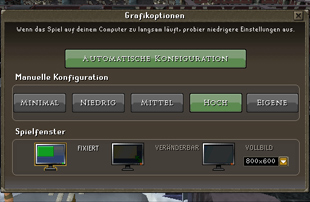
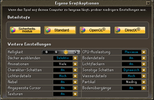

")
Grafikoptionen
Einführung
 Um eure Grafikeinstellungen zu verändern, müsst ihr das Spieloptionen-Fenster öffnen und 'Grafikoptionen' anklicken. Hier könnt ihr die meisten Einstellungen eurer Detailstufe verändern.
Um eure Grafikeinstellungen zu verändern, müsst ihr das Spieloptionen-Fenster öffnen und 'Grafikoptionen' anklicken. Hier könnt ihr die meisten Einstellungen eurer Detailstufe verändern.


- Ebenen
Mit dieser Option könnt ihr einstellen, ob ihr Ebenen der Spielwelt, die über oder unter euch liegen, sehen könnt. Bei 'Momentan' seht ihr an Stelle dieser Ebenen nur schwarz. Dies ist nur im Sicherheitsmodus verfügbar.
- CPU-Auslastung
Durch diese Option könnt ihr einstellen, wie viel Prozent der CPU-Auslastung eures Rechners für RuneScape benutzt werden darf. Diese Option ist vor allem für Nutzer von Mobilcomputern (Laptop, Netbook, etc) nützlich, damit das Gerät nicht überhitzt. Allerdings wird dadurch auch die Performance des Spiels gesenkt, sodass ihr euch etwas Zeit nehmen solltet, um verschiedene Einstellungen zu testen, damit die Performance möglichst ausgeglichen ist.
- Dächer ausblenden
Die Einstellungen für Dächer sind 'Immer' oder 'Selektiv'. Bei 'Immer' sind die Dächer aller Gebäude außer denen unsichtbar, die auf einer Ebene unter euch liegen. 'Selektiv' dagegen blendet Dächer nur aus, wenn sie die Sicht auf euren Charakter versperren würden, z.B. wenn ihr ein Gebäude betretet oder die Kamera so dreht, dass ein Dach im Weg ist.
- Bodendetails
Bodendetails sind die kleinen Steine, langen Grashalme und diverse andere kleine Dinge, die in RuneScape auf dem Boden verteilt sind. Wenn das Spiel langsam läuft, solltet ihr versuchen, diese Details abzuschalten.
- Texturdetails
Hiermit stellt ihr die Qualität der Oberflächenstrukturen ein, die in der normalen Detailstufe oder im Sicherheitsmodus dargestellt werden. Auf 'Hoch' sieht RuneScape so gut wie möglich aus, aber wenn ihr diese Option auf 'Niedrig' stellt, könnte das Spiel auf eurem Computer besser laufen.
- Animationen
Dies sind die Animationen, die eure Spielfiguren beim Nichtstun ausübt. Wenn diese Option auf 'Viele' steht, werden diese Animationen deaktiviert, wenn mehr als 200 Spieler in Reichweite der Minikarte sind. Auf der Einstellung 'Wenige' passiert dies bereits bei 50 Spielern. Bei 'Alle' werden sämtliche Animationen ausgeschaltet.
- Lichtflackern
Feuer flackert und verändert sich, während es brennt - sowohl im echten Leben als auch auf RuneScape. Wenn diese Option aktiv ist, werden diese Effekte in RuneScape dargestellt.
- Bodentexturen
Diese Option deaktiviert diverse Strukturen auf dem Boden, um die Geschwindigkeit des Spiels zu verbessern. Sie ist nur im Sicherheitsmodus verfügbar.
- Charakterschatten
Diese Option steuert die Schatten von Spielfiguren. Mit aktivierten Charakterschatten wird die Spielwelt realistischer aussehen, aber mit ausgeschalteten Charakterschatten wird das Spiel schneller laufen.
- Sonstige Schatten
Sonstige Schatten können auf 'Dynamisch', 'Statisch' oder 'Aus' geschaltet werden. Mit dynamischen Schatten werfen sämtliche Objekte in der Spielwelt einen Schatten und werden an die Bewegung angepasst, 'Statisch' aktiviert Schatten, die sich nicht bewegen, und mit 'Aus' werden Schatten von Spielobjekten nicht dargestellt. Diese Option ist nur auf der hohen und normalen Detailstufe verfügbar.
- Lichterdetails
Mit dieser Option steuert ihr die Glanzpunkte auf glatten oder glänzenden Oberflächen und die Lichtquellen im Spiel - also z.B. Laternen und Feuer. Wenn die Lichter aktiv sind, werden diese Lichtquellen realistischer dargestellt und schaffen so atmosphärische Beleuchtung. Bei ausgeschalteten Lichtern werden Lichtquellen so dargestellt wie bisher. Dies ist nur für die hohe und normale Detailstufe möglich.
- Wasserdetails
Ihr könnt zwischen hohen und niedrigen Wasserdetails wählen. Bei hohen Wasserdetails wird das Wasser durchsichtig, so dass ihr Dinge unter der Wasseroberfläche sehen könnt. Bei niedrigen Wasserdetails werden die neuen Oberflächeneffekte noch dargestellt, aber das Wasser ist undurchsichtig. Wenn ihr RuneScape nicht auf hoher Detailstufe spielt, bleibt der Wassereffekt der Gleiche wie früher. Im Sicherheitsmodus ist das Wasser einfarbig.
- Nebel
Hiermit könnt ihr die Sichtweite im Spiel einstellen. Wenn euch der Nebel stört, schaltet ihn 'aus', wodurch er in große Entfernung geschoben wird.
- Partikel
Hier könnt ihr den Partikeleffekt einstellen. Partikel können unter anderem für visuelle Effekte wie Rauch, Schnee und Magie benutzt werden.
- Kantenglättung
Die Kantenglättung entfernt die 'Treppeneffekte' an Kanten von Figuren und Objekten, wenn ihr im Vollbildmodus spielt. Diese Option ist standardmäßig 'Keine', aber ihr könnt bei Bedarf zwei- oder vierfache Kantenglättung auswählen. Je höher der Multiplikator, desto stärker werden die Kanten geglättet, aber höhere Werte werden eure Grafikkarte mehr belasten und könnten so die Spielgeschwindigkeit verringern. Diese Option ist nur auf der hohen Detailstufe verfügbar.
- Bodenübergänge
Diese Option glättet die Übergänge, wo eine Bodentextur an eine andere Bodentextur angrenzt. Am meisten bemerkt man das am Wegrand, wo die eckigen Linien des Wegs auf den Boden oder das Gras daneben treffen. Diese Option ist nur im Sicherheitsmodus verfügbar.
- Angepasste Cursor
Diese Option ist standardmäßig ausgeschaltet. Wenn ihr sie einschaltet, verändert sich euer Mauszeiger, wenn ihr ihn über etwas im Spiel bewegt. Beispiel: Wenn ihr euren Mauszeiger über etwas bewegt, das ihr benutzen könnt, verwandelt er sich in eine Hand - wenn ihr ihn über eine Tür bewegt, verwandelt er sich zu einer Tür. Die entsprechende Aktion entspricht (bei Mäusen mit zwei oder mehr Tasten) der Linksklick-Option für das entsprechende Objekt oder der obersten Option im Rechtsklickmenü.
~DirectX ist ein Markenzeichen der Microsoft Corporation in den USA und/oder anderen Ländern.

Weitere Artikel in Steuerung
|
|
|
Weiterführende Informationen Wenn euch dieser Artikel nicht weitergeholfen hat, könnt ihr in den folgenden Kapiteln der RuneScape-Webseite mehr Informationen finden:
|
|